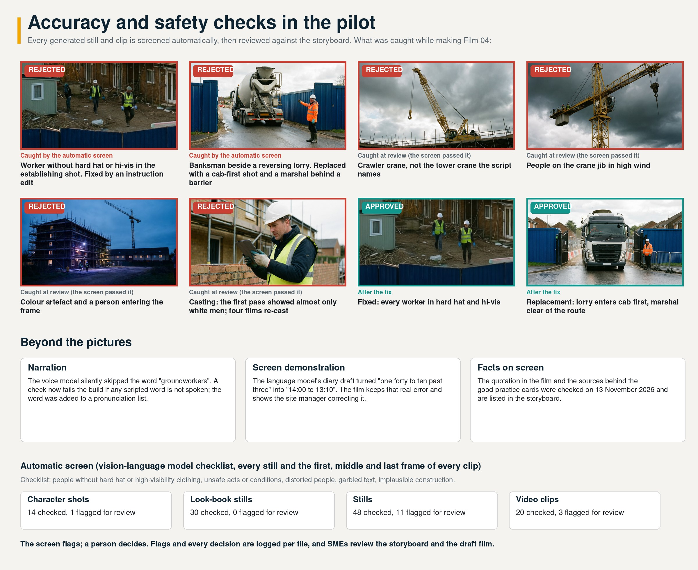
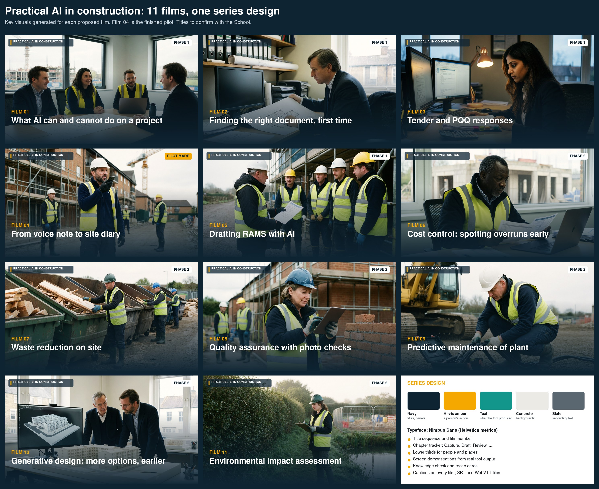
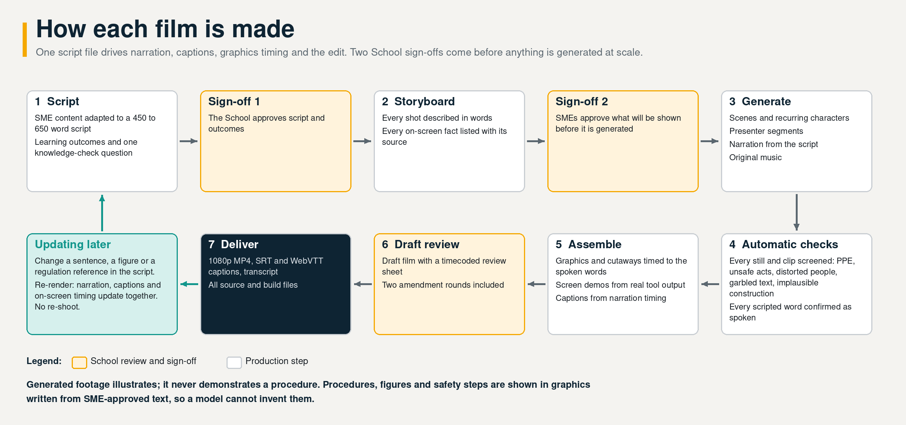

3 min 25 s, captions burned in; caption file: WebVTT. People, places and companies are fictional. Footage, narration and graphics were produced with generative AI and checked for accuracy before release.
What the pilot shows
A site and a recurring character
Dan, a site manager, is the same person in every scene. Cutaways follow his words: the crane in high wind, the bricklayers, the ready-mix lorry, the slab pour.
Real tool output on screen
The diary draft is the unedited output of an open-weight language model given Dan's transcript. It misread the crane times, so the film teaches the review step with a real error.
Built for learning
Outcomes up front, five short chapters with a tracker, a knowledge check with a pause to think, a recap, and captions in SRT and WebVTT.
Checked for accuracy and safety
Every generated still and clip is screened for missing PPE, unsafe acts, distorted people and garbled text, then reviewed against the storyboard.
Accuracy and safety checks

One series design for eleven films

How each film is made

Earlier generative video work
More: product visual pipeline demo.